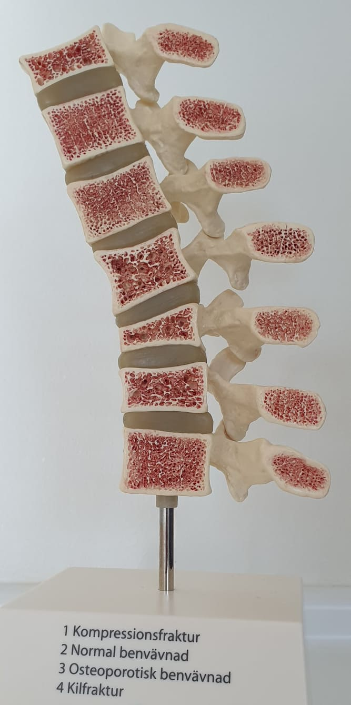

Bone Monitoring Clinic AB
I kampen mot benskörhet
Om benskörhet
Osteoporos, eller benskörhet som det heter på svenska, är ett tillstånd där skelettet blir skörare. Det beror på att nedbrytningen och uppbyggnaden av kroppens skelett inte fungerar som det ska. Benet bryts ner snabbare än det byggs upp, vilket innebär att skelettet blir svagare. Det gör att du lättare kan få en benskörhetsfraktur vid en olycka eller fall där andra, med ett normalstarkt skelett, kanske bara skulle få ett blåmärke eller en lätt stukning.
Vid benskörhet är det vanligast att få ett benbrott i handled, överarm, höft, ryggkotor eller bäcken. Faktorer som kan påverka bentätheten är ålder, kön, ärftlighet, rökning, motionsvanor, vissa sjukdomar och vissa läkemedel, till exempel kortison eller aromatashämmare vid bröstcancer. Risken för benskörhet minskar om du är fysiskt aktiv. Vid tillräckligt hög ålder blir nästan alla bensköra. Hos kvinnor minskar benmassan något snabbare efter klimakteriet då mängden av kvinnligt könshormon, östrogen, minskar vilket gör att kvinnor löper en större risk att bli bensköra i tidigare ålder än män.
Bentätheten mäts med hjälp av lågdosröntgen, DXA, för att se hur tätt skelettet är. Du kan behöva gå igenom en bentäthetsmätning om du har fått ett benbrott efter en lättare olyckshändelse. Det är ovanligt att små skador leder till benbrott om din bentäthet är som den ska vara. Du kan också behöva göra en bentäthetsmätning vid vissa sjukdomar eller behandlingar
Frax, Fracture Risk Assessment Tool, är ett verktyg som tagits fram för att beräkna frakturrisken under en 10-årsperiod. För att göra testet kan du gå in på https://www.sheffield.ac.uk/FRAX/tool.aspx?country=5Vad är DXA?

DXA är en förkortning av Dual-energy X-ray Absorptiometry. Andra namn för samma mätning är DEXA, Benmineralmätning, Bentäthetsmätning och Bendensiometri. DXA är en speciell röntgenutrustning som endast används för mätning av bentäthet och kroppssammansättning. Till dessa mätningar används en mycket låg stråldos jämfört med andra röntgenundersökningar.
Exempel på stråldoser vid olika röntgenundersökningar är:
Datortomografi (skiktröntgen) av ländryggen på en vuxen person ger en effektiv dos på 8.4 mSv (1)
Slätröntgen av ländryggen på en vuxen person ger en effektiv dos på 1.1 mSv (1)
DXA av ländryggen på en vuxen person ger en effektiv dos på < 0,02 mSv (2)
1) Leitz, Almén, Patientdoser från röntgenundersökningar i Sverige- utveckling från 2005–2008, SMM 2010:14 ISSN:2000–0456
(2) G.M. Blake et al., Bone 38 (2006) 935–942
För att förstå hur låg stråldosen är kan detta jämföras med ca 2 dagars strålning som vi får från den naturliga bakgrundsstrålningen (rymden, vår egen kropp och marken (radon undantaget)) vilket under ett år ger en stråldos på 1-2 mSv
Hur går en DXA mätning till?
Vid en DXA-mätning ligger man på en brits där den svaga röntgenstrålen skickas genom det ben som ska undersökas. Stråldosen är betydligt lägre än vid en vanlig röntgenundersökning (se ovan, effektiv dos).
De vanligaste mätpunkterna är ländryggen och höfterna, som är ”golden standard” över hela världen, men beroende på frågeställning behöver man ibland även mäta en handled eller ryggkotorna från sidan. Mätresultatet är bara en av flera faktorer som bedöms av läkaren för att avgöra om du har en benskörhet som behöver behandlas.
För att få ett så korrekt resultat som möjligt är det mycket viktigt att utförande klinik har rätt kompetens för utförande och tolkande av dessa mätningar. På BMC har vi Röntgensjuksköterskor som även är certifierade DXA-sköterskor. Vi har mångårig erfarenhet av bentäthetsmätningar vilket gör att vi kan hålla en mycket hög kvalitet på våra mätningar.
Forskning
All personal på BMC har gått utbildning i Good Clinical Practice / God klinisk sed (GCP) och även Dataskyddsförordningen (DSF)/ General Data Protection Regulation (GDPR) som är en europeisk förordning som reglerar behandlingen av personuppgifter och det fria flödet av sådana uppgifter inom Europeiska unionen.
Detta innebär att vi vet hur kliniska studier ska genomföras på rätt sätt och att vi kan säkerställa att all data är korrekt samt att studiedeltagarnas rättigheter och integritet skyddas.
Vi har också mångårig erfarenhet av kliniska studier även internationellt
Förutom bentäthet kan vi även utföra mätning för kroppssammansättning, ben- muskler- och fettvävnad.